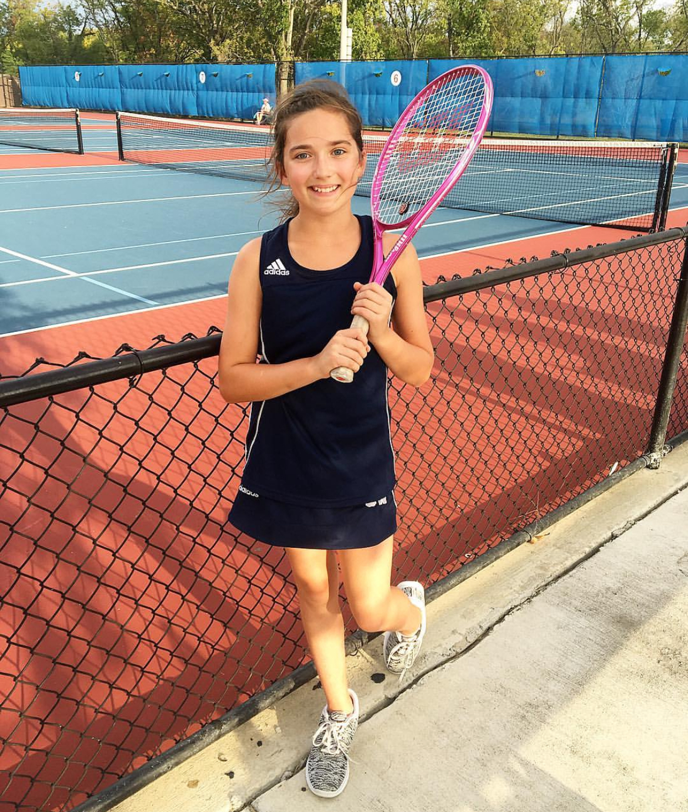

My Tennis Journey
Starting with middle school tennis, I learned the basics of the sport, from mastering different strokes like forehands and backhands to understanding the rules of the game. It was a great introduction that sparked my interest in tennis and taught me valuable lessons about discipline, teamwork, and sportsmanship. Playing with classmates also added a social aspect to the game, making practices and matches enjoyable and memorable.
Transitioning to high school tennis brought new challenges and opportunities for growth. I honed my skills further, working on strategies, footwork, and mental toughness. Competing against players from other schools intensified the experience, fostering a competitive spirit while also building camaraderie with my teammates. The thrill of representing my school and striving for victory on the court added an extra layer of motivation and excitement.
One of the most enjoyable aspects of playing tennis is doing so with friends and family. Whether it's rallying on the court, cheering each other on during matches, or simply spending time together at the tennis courts, the shared experiences create lasting bonds and cherished memories. Playing alongside siblings adds a special dynamic, creating friendly rivalries and opportunities for mutual support and encouragement. Some of my favorite memories playing tennis are doing so with friends and family.
